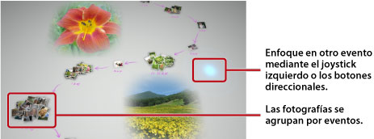

Visualización de fotografías
Cuando inicie Photo Gallery, todas las fotografías almacenadas en el almacenamiento del sistema del sistema PS3™ se analizan automáticamente y se agrupan por eventos. Las fotografías se agrupan por eventos en función de la fecha y la hora de la realización de las fotografías.
Selección de eventos
Utilice el joystick izquierdo o los botones direccionales para desplazarse por las fotografías o los eventos. Pulse el botón  para seleccionar varias fotografías o eventos con cada selección.
para seleccionar varias fotografías o eventos con cada selección.

Modificación de la forma en la que se visualizan las fotografías
Para modificar la forma en la que se visualizan las fotografías, seleccione los grupos o los eventos y, a continuación, pulse el botón  . La visualización cambia de la forma que se indica en las imágenes siguientes. Para regresar a la visualización anterior, pulse el botón
. La visualización cambia de la forma que se indica en las imágenes siguientes. Para regresar a la visualización anterior, pulse el botón  .
.
Nota
Cuando se visualiza una fotografía en el modo de pantalla completa, puede acceder al panel de control utilizado en la categoría  (Foto) en la pantalla XMB™ si pulsa el botón
(Foto) en la pantalla XMB™ si pulsa el botón  . De esta forma, puede utilizar las opciones disponibles del panel de control en la fotografía mostrada.
. De esta forma, puede utilizar las opciones disponibles del panel de control en la fotografía mostrada.
Visualización de fotografías como una galería
Para reproducir una galería de sus fotografías, seleccione una lista de reproducción o un evento en [Área de biblioteca], pulse el botón y, a continuación, seleccione  (Galería). Desde la pantalla que se muestra, ajuste las opciones de la galería que se describen a continuación y seleccione [Iniciar].
(Galería). Desde la pantalla que se muestra, ajuste las opciones de la galería que se describen a continuación y seleccione [Iniciar].
| Estilo de galería | Permite seleccionar la manera en la que desea que se visualicen las fotografías en la galería. |
|---|---|
| Velocidad de cambio | Permite seleccionar la velocidad de cambio de la galería. |
| Ordenar | Permite seleccionar el orden de las fotografías. |
| Música de galería | Permite seleccionar la música que se reproducirá de fondo durante la galería a partir del contenido de música que se proporciona con la aplicación Photo Gallery. |
 |
Permite seleccionar la música que se reproducirá de fondo durante la galería en la categoría  (Música) en la pantalla XMB™. (Música) en la pantalla XMB™. |
Notas
- En el transcurso de una galería, puede acceder al panel de control de la categoría (Foto) si se pulsa el botón . De esta forma, puede utilizar las opciones disponibles del panel de control en la galería.
- Cuando las fotografías se muestren en [Área de biblioteca], puede seleccionar [Similitud] en [Ordenar] para ordenar las fotografías según la similitud de las imágenes.
Modificación de la música de fondo
Puede modificar la música que se reproduce de fondo mientras se visualizan las fotografías. Pulse el botón PS del mando inalámbrico para mostrar la pantalla XMB™, vaya a (Música) y, a continuación, seleccione el archivo de música que desea reproducir.
Notas
- Para modificar la música de fondo para una galería, seleccione la música que desea reproducir antes de iniciar la galería.
- Mientras utilice Photo Gallery, si selecciona una pista de música que esté guardada en un soporte de almacenamiento como música del fondo y, a continuación, inicia una galería, es posible que la pista no vuelva a reproducirse una vez haya finalizado la galería.